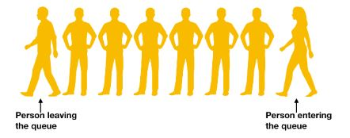

- Each node has two parts, one stores the data and another is connected to a different node. The last node is not connected to any other node and thus, its connection to the next node is null.
- In a linked list, a node is connected to a different node forming a chain of nodes.
- Thus to make a linked list, we first need to make a node which should store some data into it and also a link to another node.
- A node should store some data and a connection to a different node. For this, structure is used to store this information, and to store the connection, we can simply store the address of the node which it will be linked to.
struct node {
int data;
struct node *next;
};
Here's a C program to make two nodes and connect one with another.
#include <stdio.h>
#include <stdlib.h>
struct node {
int data;
struct node *next;
};
int main() {
struct node *a, *b;
a = malloc(sizeof(struct node));
b = malloc(sizeof(struct node));
a->data = 10;
b->data = 20;
a->next = b;
b->next = NULL;
printf("%d\n%d\n",a->data, a->next->data);
return 0;
- At the beginning of the list.
- At the end of the list.
- Anywhere in between the other nodes.
Inserting a new node at the beginning of a linked list
- First, the node(n) and the linked list(L) are passed to the function.
- After this, the next of the node is pointed to the head of the linked list.
- Since the head should always point to the first element of the linked list, so we change the head to point to the new node.
Inserting a new node at the end of a linked list
- To insert a node at the end of a linked list, iterate to the last of the linked list and add a new node there.
- First pass the linked list and node to the function, iterate it to the last of the linked list and add a node there.
Inserting a new node in the middle of the linked list
- To insert a new node in the middle of a linked list, we need to break the existing links and create new links.
- We start by passing the node(n) and the node after which we are going to insert this node
- Next of the new node is pointed to the next of the node a.
Deleting nodes in a linked list
A node in a linked list is deleted by connecting the predecessor node of the node to be deleted by the successor of the node.- If the node that is to be deleted is the head of the linked list, then update the head pointer.
- Otherwise, iterate to the node previous to the node n and then link the node previous of the node to be deleted to the next of it.
A stack is an Abstract data type in which the most recently added item is removed first. It works on LIFO(Last-in, First-out) policy.
Some real world applications of stack are:
- Plates on a tray.
- Shipment in a cargo.
- Stack of coins.
- Stack of drawers.
A stack supports few basic operations. They are:
Push():
The push operation adds a new element to the stack. As stated above, any element added to the stack goes at the top, so push adds an element at the top of a stack.
Pop():
The pop operation removes and also returns the top-most (or most recent element) from the stack.
Top():
The Top operations only returns (doesn’t remove) the top-most element of a stack.
isEmpty():
This operation checks whether a stack is empty or not i.e., if there is any element present in the stack or not.
isFull():
This operation checks whether a stack is full or not.
Similar to stacks, a queue is also an Abstract Data Type or ADT. A queue follows FIFO (First-in, First-out) policy. It is equivalent to the queues in our general life. For example, a new person enters a queue at the last and the person who is at the front (who must have entered the queue at first) will be served first.
Some real world examples of queue are:
- Cashier line in any store.
- People on an escalator.
- Checkout at any book store.
Similar to stack, queue supports few basic operations. They are:
Enqueue():
Enqueue is an operation which adds an element to the queue. As stated earlier, any new item enters at the tail of the queue, so Enqueue adds an item to the tail of a queue.
Dequeue():
Enqueue is an operation which adds an element to the queue. As stated earlier, any new item enters at the tail of the queue, so Enqueue adds an item to the tail of a queue.
Front():
Enqueue is an operation which adds an element to the queue. As stated earlier, any new item enters at the tail of the queue, so Enqueue adds an item to the tail of a queue.
isEmpty():
It is used to check whether the queue has any element or not.
isFull():
It is used to check whether the queue has any element or not.